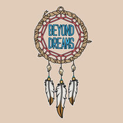

Founded in December 2020, Beyond Dreams is a Tucson-based organization that supports Arizona students, especially those facing financial or systemic barriers by providing scholarships and access to educational resources. In 2021, thanks to a generous grant from the Community Food Bank, we expanded our efforts and awarded scholarships to nine students to help cover their college or university tuition. Since then, Beyond Dreams has continued to support students by offering new scholarship opportunities, hosting workshops, and creating volunteer experiences that help young people grow, connect, and achieve their goals.